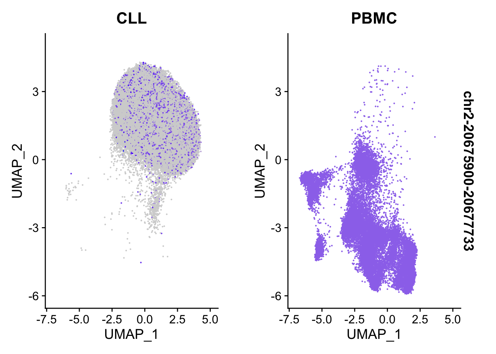

multi-sample scATAC-seq custom analysis
Gali Bai
2021-06-07
Last updated: 2021-07-27
Checks: 7 0
Knit directory: MAESTRO_documentation/
This reproducible R Markdown analysis was created with workflowr (version 1.6.2). The Checks tab describes the reproducibility checks that were applied when the results were created. The Past versions tab lists the development history.
Great! Since the R Markdown file has been committed to the Git repository, you know the exact version of the code that produced these results.
Great job! The global environment was empty. Objects defined in the global environment can affect the analysis in your R Markdown file in unknown ways. For reproduciblity it’s best to always run the code in an empty environment.
The command set.seed(20201223) was run prior to running the code in the R Markdown file. Setting a seed ensures that any results that rely on randomness, e.g. subsampling or permutations, are reproducible.
Great job! Recording the operating system, R version, and package versions is critical for reproducibility.
Nice! There were no cached chunks for this analysis, so you can be confident that you successfully produced the results during this run.
Great job! Using relative paths to the files within your workflowr project makes it easier to run your code on other machines.
Great! You are using Git for version control. Tracking code development and connecting the code version to the results is critical for reproducibility.
The results in this page were generated with repository version 20d0552. See the Past versions tab to see a history of the changes made to the R Markdown and HTML files.
Note that you need to be careful to ensure that all relevant files for the analysis have been committed to Git prior to generating the results (you can use wflow_publish or wflow_git_commit). workflowr only checks the R Markdown file, but you know if there are other scripts or data files that it depends on. Below is the status of the Git repository when the results were generated:
Ignored files:
Ignored: .DS_Store
Ignored: .RData
Ignored: .Rhistory
Ignored: .Rproj.user/
Ignored: analysis/.DS_Store
Ignored: code/.DS_Store
Ignored: data/.DS_Store
Ignored: data/multi-scatac/.DS_Store
Ignored: data/multi-scrna/
Untracked files:
Untracked: .RDataTmp
Untracked: code/snRNA_genelength.R
Untracked: code/snRNA_genelength_TPM.R
Untracked: data/allen/
Untracked: data/multi-scatac/bed/
Untracked: data/multi-scatac/bigwig/GDF7_bed_added.png
Untracked: output/snRNA_TPM_VS_genelength.png
Untracked: output/snRNA_genelengthVSLognormUMI.png
Untracked: output/snRNA_genelengthVSUMI.png
Unstaged changes:
Deleted: MultiSample_scATACseq.Rproj
Deleted: atac_pbmc_500_nextgem.GIGGLE/0.peaks.bed
Deleted: atac_pbmc_500_nextgem.GIGGLE/0.peaks.bed.gz
Deleted: atac_pbmc_500_nextgem.GIGGLE/0.peaks.bed.result.xls
Modified: code/Basic_Operations.R
Modified: pbmc_1k_v3_8k_res.rds
Modified: pbmc_1k_v3_Monocyte_filtered.pdf
Modified: pbmc_1k_v3_Monocyte_top.pdf
Note that any generated files, e.g. HTML, png, CSS, etc., are not included in this status report because it is ok for generated content to have uncommitted changes.
There are no past versions. Publish this analysis with wflow_publish() to start tracking its development.
About
Custom analysis can be conducted using either MAESTRO or Seurat package. In this study, benchmarking experiments were designed to systematically test the effect of varying processing times on single-cell transcriptome and epigenome profiles from healthy and diseased donors. Peripheral blood mononuclear cells (PBMC) were isolated from healthy donors and from patients affected with chronic lymphocytic leukemia (CLL). Samples were either preserved immediately (0 h) or after 8 and 24 h.
Goal: Evaluating the effect of sampling time on scATAC-seq chromatin accessibility profiles.
Load Required Libraries
library(Seurat)Attaching SeuratObjectlibrary(tidyr)
library(ggplot2)
library(dplyr)
Attaching package: 'dplyr'The following objects are masked from 'package:stats':
filter, lagThe following objects are masked from 'package:base':
intersect, setdiff, setequal, unionlibrary(RColorBrewer)
library(presto)Loading required package: RcppLoading required package: data.table
Attaching package: 'data.table'The following objects are masked from 'package:dplyr':
between, first, lastRead Seurat object
all_samples_scATAC_Object <- readRDS("./data/multi-scatac/all_samples_scATAC_Object.rds")
ATAC <- all_samples_scATAC_Object$ATAC
ATACAn object of class Seurat
74113 features across 55262 samples within 2 assays
Active assay: ACTIVITY (28307 features, 2000 variable features)
1 other assay present: ATAC
2 dimensional reductions calculated: lsi, umapDefaultAssay(ATAC) <- 'ATAC'
ATAC[['ATAC']]Assay data with 45806 features for 55262 cells
Top 10 variable features:
chr19-54189582-54191276, chr19-42268210-42269240,
chr5-151771128-151772110, chr12-6851317-6852759,
chr3-120094415-120095836, chr19-5903777-5904895,
chr10-74825989-74826947, chr1-110338292-110339500,
chr19-38849959-38850827, chr19-54136972-54137765 Extract Sample Information
df <- as.data.frame(do.call(rbind, strsplit(row.names(ATAC@meta.data), '@')))
ATAC@meta.data[,c("sample", "hours", "cell")] <- df %>% separate(V1,into = c("sample", "hours"),
sep = "(?<=[A-Za-z])(?=[0-9])")
head(ATAC@meta.data) orig.ident nCount_ATAC nFeature_ATAC ATAC_snn_res.0.6
CLL0@AAACGAAAGACAACGC all_samples 1074 1074 8
CLL0@AAACGAAAGCAATAAC all_samples 770 770 2
CLL0@AAACGAAAGCCTTTGA all_samples 679 679 2
CLL0@AAACGAAAGGATTTGA all_samples 1495 1495 8
CLL0@AAACGAAAGGGATCCA all_samples 586 586 3
CLL0@AAACGAAAGTCCCGCA all_samples 836 836 2
seurat_clusters nCount_ACTIVITY nFeature_ACTIVITY
CLL0@AAACGAAAGACAACGC 8 959.3852 2803
CLL0@AAACGAAAGCAATAAC 2 677.8859 2085
CLL0@AAACGAAAGCCTTTGA 2 604.7142 1761
CLL0@AAACGAAAGGATTTGA 8 1361.3128 3784
CLL0@AAACGAAAGGGATCCA 3 533.7260 1335
CLL0@AAACGAAAGTCCCGCA 2 709.1697 2350
assign.ident assign.score assign.celltype sample hours
CLL0@AAACGAAAGACAACGC B 0.1422073 B CLL 0
CLL0@AAACGAAAGCAATAAC B 0.3873166 B CLL 0
CLL0@AAACGAAAGCCTTTGA B 0.3873166 B CLL 0
CLL0@AAACGAAAGGATTTGA B 0.1422073 B CLL 0
CLL0@AAACGAAAGGGATCCA NK 0.6286958 NK CLL 0
CLL0@AAACGAAAGTCCCGCA B 0.3873166 B CLL 0
cell
CLL0@AAACGAAAGACAACGC AAACGAAAGACAACGC
CLL0@AAACGAAAGCAATAAC AAACGAAAGCAATAAC
CLL0@AAACGAAAGCCTTTGA AAACGAAAGCCTTTGA
CLL0@AAACGAAAGGATTTGA AAACGAAAGGATTTGA
CLL0@AAACGAAAGGGATCCA AAACGAAAGGGATCCA
CLL0@AAACGAAAGTCCCGCA AAACGAAAGTCCCGCAPlot Umap on Default Parameters (Res=0.6)
p1 <- DimPlot(ATAC, label = TRUE, reduction = "umap", group.by = "seurat_clusters", repel=T, pt.size = 0.3, label.size = 3) + labs(title = "Clustering of PBMCs from all samples")
p2 <- DimPlot(ATAC, label = TRUE, reduction = "umap", group.by = "assign.ident", repel=T, pt.size = 0.3, label.size = 3) + labs(title = "Annotation of PBMCs from all samples")
p3 <- DimPlot(ATAC, label = FALSE, reduction = "umap", group.by = "hours",repel=T, pt.size = 0.3, label.size = 2.5,cols = brewer.pal(3,"Dark2")) + labs(title = "Clustering of PBMCs in different time points")
p4 <- DimPlot(ATAC, label = FALSE, reduction = "umap", group.by = "assign.ident",split.by = "hours",repel=T, pt.size = 0.3, label.size = 2.5,cols = brewer.pal(6,"Dark2")) + labs(title = "Clustering of PBMCs in different time points")
p5 <- DimPlot(ATAC, label = FALSE, reduction = "umap", group.by = "assign.ident", split.by = "sample", repel=T, pt.size = 0.5, label.size = 2.5, cols = brewer.pal(6,"Dark2")) + labs(title = "Clustering of PBMCs for patients and normal")
p1
p2
p3
p4
p5
| Version | Author | Date |
|---|---|---|
| 71fb9af | baigal628 | 2021-06-21 |
Conclusion: From the above figures, we can easily observe similar results as described in the paper. A remarkable effect of the sampling time on single-cell epigenome profiles are lying across all blood cell subtypes from healthy donors and CLL patient samples.
Find Differencially Accessible Peaks
Between Cell Types
da_peaks <- wilcoxauc(ATAC, 'assign.ident', seurat_assay = 'ATAC', assay = 'data')
##Use the 'data slots' under 'ATAC' peak assay
head(da_peaks) feature group avgExpr logFC statistic auc
1 chr10-100009661-100010002 B 0.04421483 -0.004180845 376355492 0.4972915
2 chr10-100014067-100014694 B 0.20483399 0.160140740 404566854 0.5345682
3 chr10-100020439-100021764 B 0.14095481 0.105361771 395683234 0.5228299
4 chr10-100045990-100046440 B 0.02877974 0.010884171 379924726 0.5020077
5 chr10-100185585-100186558 B 0.08601511 -0.011584961 374140960 0.4943654
6 chr10-100228922-100229819 B 0.04592159 -0.013408557 374884735 0.4953482
pval padj pct_in pct_out
1 1.048765e-05 1.262178e-05 1.808383 2.3666093
2 0.000000e+00 0.000000e+00 8.447106 1.4464451
3 3.903902e-194 2.798469e-192 5.856287 1.2577784
4 1.819856e-06 2.231630e-06 1.197605 0.7976963
5 4.947733e-11 6.703220e-11 3.548902 4.7398385
6 1.128560e-12 1.607825e-12 1.880240 2.8300013top2_da_peaks <- top_markers(da_peaks, n = 2, auc_min = 0.5, pct_in_min = 10, pct_out_max = 10)
Idents(ATAC) <- ATAC$assign.ident
top2_cell_markers<- top2_da_peaks %>%
select(-rank) %>%
unclass() %>%
stack() %>%
pull(values) %>%
unique() %>%
.[!is.na(.)]
DotPlot(object = ATAC, features = top2_cell_markers) + coord_flip()
| Version | Author | Date |
|---|---|---|
| 71fb9af | baigal628 | 2021-06-21 |
FeaturePlot(
object = ATAC,
features = top2_da_peaks$B[1],
pt.size = 0.1
)
| Version | Author | Date |
|---|---|---|
| 71fb9af | baigal628 | 2021-06-21 |
Between Sampling Time
da_peaks_S <- wilcoxauc(ATAC, 'hours', seurat_assay = 'ATAC', assay = 'data')
head(da_peaks_S) feature group avgExpr logFC statistic auc
1 chr10-100009661-100010002 0 0.04611855 -0.0005770281 341659390 0.4999628
2 chr10-100014067-100014694 0 0.14404458 0.0404261225 349666546 0.5116799
3 chr10-100020439-100021764 0 0.09657310 0.0199712436 346240384 0.5066663
4 chr10-100045990-100046440 0 0.02908577 0.0094514711 343258921 0.5023034
5 chr10-100185585-100186558 0 0.09815266 0.0087679526 343311094 0.5023798
6 chr10-100228922-100229819 0 0.06185076 0.0129897588 343803122 0.5030998
pval padj pct_in pct_out
1 9.541004e-01 9.601583e-01 2.109095 2.1158525
2 3.787041e-35 1.646165e-33 6.241636 3.7915858
3 1.622160e-16 8.640077e-16 4.261014 2.8730762
4 1.960387e-07 4.401190e-07 1.284728 0.8228315
5 8.345521e-03 1.156866e-02 4.517959 4.0376152
6 6.654038e-06 1.278395e-05 2.810342 2.1896613Between CLL and Healthy Donors
da_peaks_S <- wilcoxauc(ATAC, 'sample', seurat_assay = 'ATAC', assay = 'data')
head(da_peaks_S) feature group avgExpr logFC statistic auc
1 chr10-100009661-100010002 CLL 0.03980241 -0.019284706 340715858 0.4921583
2 chr10-100014067-100014694 CLL 0.17969845 0.179698451 370645737 0.5353915
3 chr10-100020439-100021764 CLL 0.12438901 0.118147885 362034822 0.5229532
4 chr10-100045990-100046440 CLL 0.02505952 0.006421044 346352024 0.5002996
5 chr10-100185585-100186558 CLL 0.07626504 -0.046306811 334696794 0.4834638
6 chr10-100228922-100229819 CLL 0.04227613 -0.031601277 338909576 0.4895491
pval padj pct_in pct_out
1 2.997013e-34 5.176906e-34 1.5581679 3.1572366
2 0.000000e+00 0.000000e+00 7.0782966 0.0000000
3 1.158449e-179 1.399365e-178 4.9323500 0.3542774
4 4.957393e-01 5.010997e-01 0.9981147 0.9430030
5 5.404750e-76 1.657317e-75 3.0109793 6.4343024
6 9.543143e-53 2.141655e-52 1.6607519 3.7876420top2_da_peaks_S <- top_markers(da_peaks_S, n = 2, auc_min = 0.5, pct_in_min = 10, pct_out_max = 10)
FeaturePlot(
object = ATAC,
features = top2_da_peaks_S$CLL[1],
pt.size = 0.1,
split.by = 'sample'
)Warning in FeaturePlot(object = ATAC, features = top2_da_peaks_S$CLL[1], : All
cells have the same value (0) of chr2-20675900-20677733.
| Version | Author | Date |
|---|---|---|
| 71fb9af | baigal628 | 2021-06-21 |
Idents(ATAC) <- ATAC$sample
VlnPlot(
object = ATAC,
features = top2_da_peaks_S$CLL[1],
pt.size = 0.1,
idents = c("CLL", "PBMC")
)
| Version | Author | Date |
|---|---|---|
| 71fb9af | baigal628 | 2021-06-21 |
FeaturePlot(
object = ATAC,
features = top2_da_peaks_S$CLL[1],
pt.size = 0.1
)
| Version | Author | Date |
|---|---|---|
| 6e473ba | baigal628 | 2021-07-19 |
Pseudobulk Peak Calling and Genome Trackview
After cell clustering, MAESTRO redo narrow peak calling on each cluster. Users can easily compare chromatin accessibility between samples within a certain cluster based on the bigwig file. Below shows a genome track of region chr2-20675900-20677733 in Cluster 0.

| Version | Author | Date |
|---|---|---|
| 5242937 | baigal628 | 2021-07-27 |
sessionInfo()R version 4.1.0 (2021-05-18)
Platform: x86_64-apple-darwin17.0 (64-bit)
Running under: macOS Big Sur 10.16
Matrix products: default
BLAS: /Library/Frameworks/R.framework/Versions/4.1/Resources/lib/libRblas.dylib
LAPACK: /Library/Frameworks/R.framework/Versions/4.1/Resources/lib/libRlapack.dylib
locale:
[1] en_US.UTF-8/en_US.UTF-8/en_US.UTF-8/C/en_US.UTF-8/en_US.UTF-8
attached base packages:
[1] stats graphics grDevices utils datasets methods base
other attached packages:
[1] presto_1.0.0 data.table_1.14.0 Rcpp_1.0.6 RColorBrewer_1.1-2
[5] dplyr_1.0.7 ggplot2_3.3.5 tidyr_1.1.3 SeuratObject_4.0.2
[9] Seurat_4.0.1 workflowr_1.6.2
loaded via a namespace (and not attached):
[1] Rtsne_0.15 colorspace_2.0-2 deldir_0.2-10
[4] ellipsis_0.3.2 ggridges_0.5.3 rprojroot_2.0.2
[7] fs_1.5.0 spatstat.data_2.1-0 farver_2.1.0
[10] leiden_0.3.8 listenv_0.8.0 ggrepel_0.9.1
[13] fansi_0.5.0 codetools_0.2-18 splines_4.1.0
[16] knitr_1.33 polyclip_1.10-0 jsonlite_1.7.2
[19] ica_1.0-2 cluster_2.1.2 png_0.1-7
[22] uwot_0.1.10 shiny_1.6.0 sctransform_0.3.2
[25] spatstat.sparse_2.0-0 compiler_4.1.0 httr_1.4.2
[28] assertthat_0.2.1 Matrix_1.3-4 fastmap_1.1.0
[31] lazyeval_0.2.2 later_1.2.0 htmltools_0.5.1.1
[34] tools_4.1.0 igraph_1.2.6 gtable_0.3.0
[37] glue_1.4.2 RANN_2.6.1 reshape2_1.4.4
[40] scattermore_0.7 jquerylib_0.1.4 vctrs_0.3.8
[43] nlme_3.1-152 lmtest_0.9-38 xfun_0.24
[46] stringr_1.4.0 globals_0.14.0 mime_0.11
[49] miniUI_0.1.1.1 lifecycle_1.0.0 irlba_2.3.3
[52] goftest_1.2-2 future_1.21.0 MASS_7.3-54
[55] zoo_1.8-9 scales_1.1.1 spatstat.core_2.2-0
[58] promises_1.2.0.1 spatstat.utils_2.2-0 parallel_4.1.0
[61] yaml_2.2.1 reticulate_1.20 pbapply_1.4-3
[64] gridExtra_2.3 sass_0.4.0 rpart_4.1-15
[67] stringi_1.6.2 highr_0.9 rlang_0.4.11
[70] pkgconfig_2.0.3 matrixStats_0.59.0 evaluate_0.14
[73] lattice_0.20-44 ROCR_1.0-11 purrr_0.3.4
[76] tensor_1.5 labeling_0.4.2 patchwork_1.1.1
[79] htmlwidgets_1.5.3 cowplot_1.1.1 tidyselect_1.1.1
[82] parallelly_1.26.0 RcppAnnoy_0.0.18 plyr_1.8.6
[85] magrittr_2.0.1 R6_2.5.0 generics_0.1.0
[88] DBI_1.1.1 whisker_0.4 withr_2.4.2
[91] mgcv_1.8-36 pillar_1.6.1 fitdistrplus_1.1-5
[94] survival_3.2-11 abind_1.4-5 tibble_3.1.2
[97] future.apply_1.7.0 crayon_1.4.1 KernSmooth_2.23-20
[100] utf8_1.2.1 spatstat.geom_2.2-0 plotly_4.9.4.1
[103] rmarkdown_2.9 grid_4.1.0 git2r_0.28.0
[106] digest_0.6.27 xtable_1.8-4 httpuv_1.6.1
[109] munsell_0.5.0 viridisLite_0.4.0 bslib_0.2.5.1